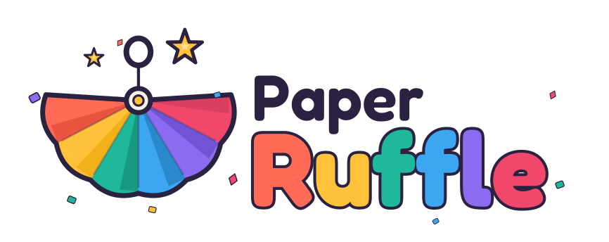
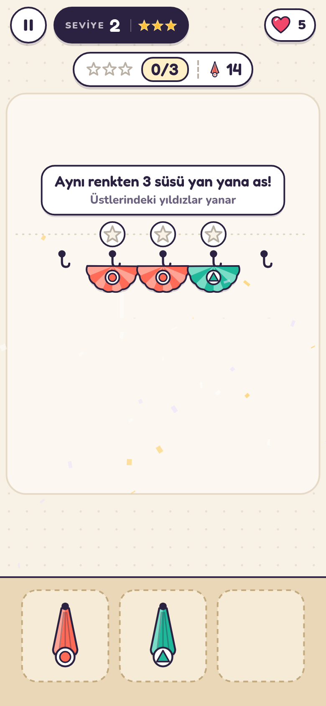
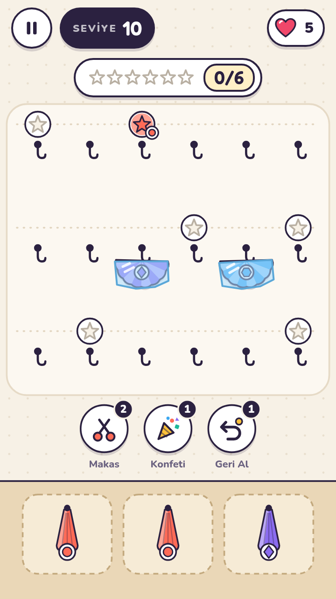
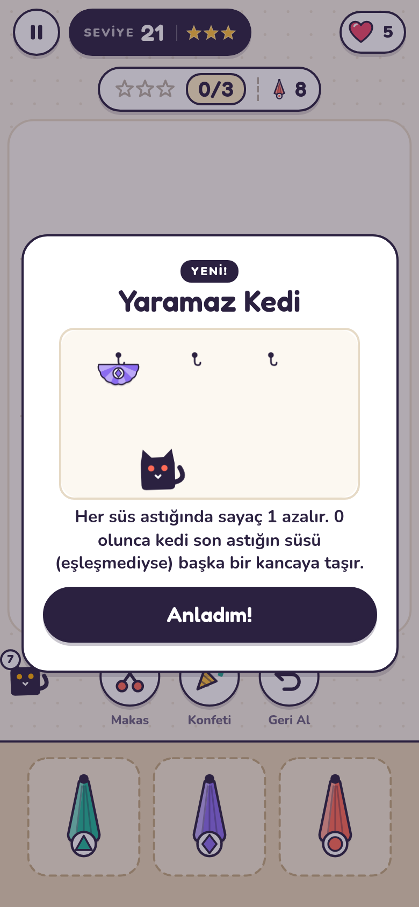
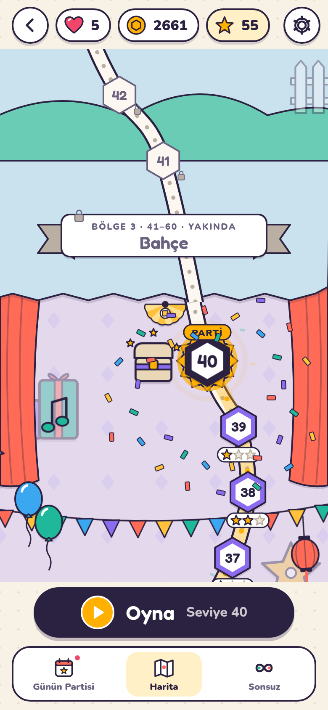
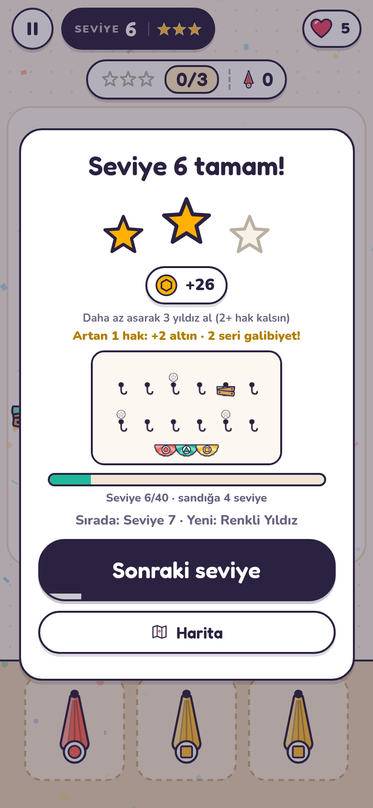

3
Basit kural
Aynı renkten üç yelpazeyi bir sırada yan yana asıyorsun. Patlıyorlar, yıldızlar yanıyor.

Mobil bulmaca oyunu
Sürükle · Ger · Çıt!
Kağıt yelpazeleri kancalara asıyorsun. Aynı renkten 3 tanesini yan yana getirince patlıyorlar, üstlerindeki yıldızlar yanıyor. Hepsi yanınca seviye bitiyor. Kuralı tek cümle, ama seviyeler ilerledikçe fazla kafa yoruyor.
App Store'dan İndir Google Play'den İndirOyun geliştirme aşamasında olduğu için linkler şu an çalışmıyor.
Kısa kısa, oyunun sevilen kısımları.
Aynı renkten üç yelpazeyi bir sırada yan yana asıyorsun. Patlıyorlar, yıldızlar yanıyor.
İlk seviyeler oyunu öğretiyor. Sonra yavaş yavaş zorlaşıyor, bir anda zorlaşmıyor.
Buz, kurdele, tahta, yaramaz kedi, fitil... Her yeniliği önce kısa bir kart anlatıyor.
Takılırsan Makas, Konfeti ve Geri Al var. 5 saniye dokunmazsan el de hamleyi gösteriyor.
Hak, çift süs, yıldızlar ve puanlamanın kısa hali.
Üstteki yelpaze sayacı kaç süs asabileceğini gösterir. Her asış 1 hak yer. Üçlü yapınca 1 hak geri gelir; üçlüleri arka arkaya yakalarsan (seri) 2 hak döner. Seviyeyi kazandıran son üçlü hak vermez. Kalan her hak, bitişte 2 altına döner.
Aynı rengi asılı bir süsün üstüne bırakırsan birleşip ×2 olur ve hak harcamaz. Üçlüde 2 süs sayılır, böylece yanındakiyle eşleşip yer açılır. Bir daha birleşmez. Tahta tıkandığında yapılacak hamle budur.
Her seviyede 2 ile 6 arasında hedef yıldız var, dağınık duruyorlar. Üçlü o kancadan geçerse yıldız yanar, hepsi yanınca kazanırsın. Renkli yıldızın kancasına yalnız o renk asılır. ×2 yıldız ancak içinde çift süs olan bir üçlüyle yanar.
Az hak harcayarak bitirirsen 3 yıldız, biraz daha fazla harcadıysan 2 alırsın. Reklam izleyerek devam ettiysen en fazla 1 yıldız olur. Seviye başında oyun, 3 yıldız için kaç hak artırman gerektiğini söyler. İlk üç öğretici seviye her zaman 3 yıldız verir.
Odalar halinde ilerliyorsun: Salon, Bahçe Partisi, Gece Partisi ve devamı. Her 5 seviyede bir sandık var, yeni bölge açılınca da bir sürpriz geliyor. Toplam 300 seviye planlandı, oyun ilerledikçe sadeleşmez.
Her gün farklı bir seviye açılıyor. Seri halinde kazanırsan ekstra ödül de geliyor.
Tahtadan haritaya, kedi kartından kazanma ekranına kadar birkaç kare.





Adım adım bütün oyun.
Alttaki tepsiden bir süs seç, yukarıdaki boş bir kancaya sürükle, aşağı çekip bırak. Bırakınca yelpaze her zaman tam açılır. Süsler düşmez, yerleri kaymaz; her hamleyi sen planlarsın.
Aynı renkten 3 veya daha fazla süsü bir sırada yan yana as. Üst üste değil, yan yana durmaları lazım. Patlayanlar yerinde kaybolur, boşalan yere başka süs kaymaz.
Üçlü bir yıldızın altındaki kancadan geçerse o yıldız yanar. Hepsi yanınca seviye biter. Renkli yıldıza yanlış renk asılmaz, geri seker. ×2 yıldız için üçlünün içinde bir çift süs olması gerekir.
Her asış 1 hak yer, birleştirme bedava. Üçlü +1, seri +2 hak geri verir. Yer kalmadıysa aynı rengi üst üste koy, çift süs hem yer açar hem de hak yemez. Az hak harcayarak bitirirsen daha çok yıldız alırsın.
Yanlış asarsan Geri Al var; harcanan hak da geri gelir. Yer kalmazsa Makas bir süsü keser, Konfeti bir sırayı patlatır. 5 saniye dokunmazsan el, o anki en iyi hamleyi gösterir. Hakların biterse bir kere reklam izleyip devam edebilirsin, o seviye 1 yıldız olur. Tekrar denemek 1 can yer.
Her yenilik önce kısa bir kartla anlatılır, sonra karışır.
Çivili süs oynamaz ve üçlüye katılmaz. Aynı sırada hemen yanındaki kancayı içeren bir üçlü yapınca tahta kırılır, süs normal olur. Üst veya alt sıradaki üçlü saymaz.
Tahtanın iki kademeli hali. Yanındaki kancayı içeren bir üçlüyle çatlar, bir üçlü daha yapınca erir ve normal süs olur. Kar tanesindeki sayı kaç üçlü kaldığını gösterir.
İki kancayı bağlar. İkisine de aynı renk asılınca kopar. Kopana kadar bu kancalar üçlüye katılmaz. Biri renkli yıldızsa renk o yıldızın rengidir.
Pati sayacı her asışta 1 azalır, birleştirmede azalmaz. 0 olunca kedi son astığın süsü, hâlâ duruyorsa rastgele başka bir uygun kancaya taşır. Fitili yakacak bir yere asla koymaz.
İki kancanın arasındaki fitilin üstünden geçen bir üçlü odayı yakar. Fitilin hemen yanındaki kancayı içeren (üstünden geçmeyen) bir üçlü ise fitili söndürür. Makas keser, Konfeti o sıradaki fitili söndürür.
Makas bir süsü veya fitili keser; tahtalı ve buzlu süs kesilmez. Konfeti bir sıradaki serbest süsleri patlatır, tahta ve buzu bir kademe kırar. Geri Al yalnızca son asışı veya birleştirmeyi geri alır. Makas ya da Konfeti kullandıktan sonra geri alınacak bir şey kalmaz.
İlerleyen bölgelerde balon, hediye, ayraç ve düğüm de çıkıyor. Hepsi aynı fikirle çalışıyor: yanındaki kancada bir üçlü yapınca açılıyorlar.
Aklına takılan olduysa buraya bak, tıklayınca açılıyor.
Hayır, ücretsiz indirebilirsin. İstersen reklamları kapatmak veya ekstra can almak için satın alma var, ama oynamak için zorunlu değil.
İlk üç seviye her şeyi öğretiyor. Sonrası yavaş yavaş zorlaşıyor. Ara sıra daha kısa mola seviyeleri de var, nefes aldırıyor.
iPhone ve Android telefonlarda. Oyun dikey tasarlandı, yatay çevirince “cihazı dikey tut” uyarısı çıkıyor.
5 saniye dokunmazsan bir el, o anki en iyi hamleyi gösteriyor. Geri Al, Makas ve Konfeti de yanında duruyor. Hakların biterse bir kere reklam izleyip devam edebiliyorsun; o seviye 1 yıldız olur.